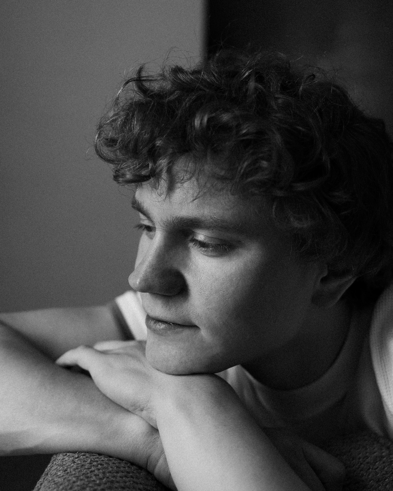
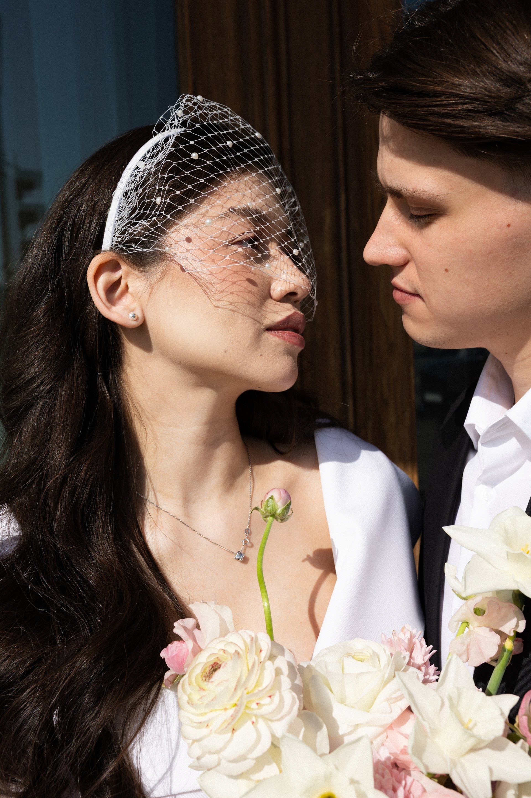

nastya nico
фотограф, москва
женский портрет
из дневника снимаю, как я вижу тебя. и этот мир в целом)

мужской портрет
из дневника учусь видеть мир не только чёрно-белым. что не скажешь о моих работах)

роспись и свадьба
из дневника праздник закончился, я взяла кусок торта в контейнере и поехала домой
смотреть кадры →08.12.2025
привет, друзья
я настя. nico, так меня звали в университете. с фотографией мы были порознь два с половиной года. в декабре 2025 я снова взяла в руки фотоаппарат и точно больше не хочу быть врозь. а летом сняла свадьбу и бесповоротно влюбилась в фотографию. для себя снимаю то, что случается само: дождь в гуанчжоу, латте на овсяном из серфа.
напиши мне
ко мне в кадр снова можно попасть.
стоимость и даты напишу в telegram